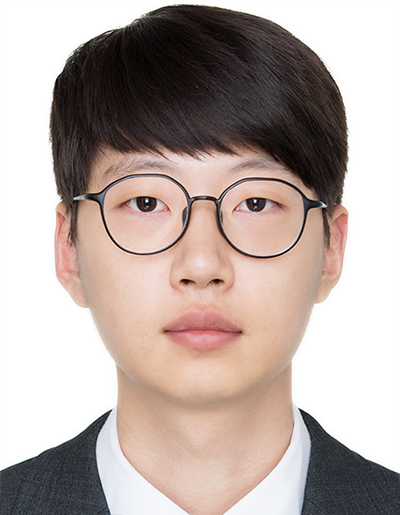

Learning & Decision
We study reinforcement learning, self-play, actor-critic methods, and policy optimization for complex decision-making environments.
Sangmyung Artificial Intelligence Laboratory
SMAI Lab
SMAI Lab studies reinforcement learning, deep learning, generative models, and representation learning, and applies these methods to simulation, vision and time-series data, industrial systems, and robotic control.
Research
SMAI Lab develops AI methods for decision-making, perception, representation, and applied intelligent systems. The lab works across algorithms, data-driven modeling, and real-world applications.
We study reinforcement learning, self-play, actor-critic methods, and policy optimization for complex decision-making environments.
We develop deep learning models that interpret time-series, vision, sensor, and multimodal data for perception and system-state understanding.
We investigate generative models, prompt automation, knowledge transfer, and representation learning for data-limited environments.
We apply AI methods to simulation, industrial diagnostics, robotic control, surveillance, and security-related systems.
Projects
Ministry of Science and ICT · Mar. 2022 - Dec. 2027
Ministry of Science and ICT · Apr. 2022 - Dec. 2029
Ministry of Science and ICT · Feb. 2022 - Feb. 2025
Ministry of Science and ICT · Mar. 2021 - Dec. 2023
Publications
Jung-Hyun Kim, Yong-Hoon Choi, You-Rak Choi, Jae-Hyeok Jeong, Min-Suk Kim
DOI 10.3390/app15041828Bum-Sok Kim, Hye-Won Suk, Yong-Hoon Choi, Dae-Sung Moon, Min-Suk Kim
DOI 10.32604/cmes.2024.052375Jaehyeok Jeong, Doyeob Yeo, Seungseo Roh, Yujin Jo, Minsuk Kim
DOI 10.3390/s24154991Jae-hyeok Jeong, Hwan-hee Jung, Yong-hoon Choi, Seong-hee Park, Min-suk Kim
DOI 10.3390/s23229214최용훈, 김민석 · 28(2), 179-187
DOI 10.9717/kmms.2025.28.2.179김정현, 최용훈, 김민석 · 27(3), 455-463
DOI 10.9717/kmms.2024.27.3.455최용훈, 정재혁, 김민석 · 27(2), 352-361
DOI 10.9717/kmms.2024.27.2.352김범석, 김정현, 김민석 · 22(3), 112-118
DOI 10.1003/JNL.JAKO202330357645069정재혁, 김민석 · 25(8), 1049-1058
DOI 10.9717/kmms.2022.25.8.1049김정현, 정재혁, 장준원, 김민석 · 102-104
최용훈, 김민서, 김민석 · 우수논문상
김범석, 김정현, 구기종, 김민석
Bum-Sok Kim, Yonghoon Choi, Minsuk Kim · 150-151
김정현, 정재혁, 김민석 · 152-153
최용훈, 조유진, 장준원, 김민석 · 270-271
석혜원, 김민석 · 41-44
장준원, 최용훈, 김민석 · 45-48
Bum-Sok Kim, Hye-Won Suk, Jung-Hyun Kim, Jae-Hyeok Jeong, Min-Suk Kim · NSR Best Paper
Bumsok Kim, Minsuk Kim, Junghyun Kim, Yonghoon Choi, Seungseo Roh
Hyewon Suk, Minsuk Kim
Junghyun Kim, Bumsok Kim, Min-Suk Kim
Jae-Hyeok Jeong, Min-Suk Kim
Hyewon Suk, Junwon Jang, Minsuk Kim
Yonghoon Choi, Hwanhee Jung, Minsuk Kim · Sangmyung University
Undergraduate paper competition, 6th Korea Artificial Intelligence Conference
MobiSec 2023 Best Paper · Cyber Attack and Defense Strategies using Reinforcement Learning via Simulated Network Environment
People
Professor

Ph.D. Student
M.S. Student
Undergraduate Researcher
Undergraduate Researcher
News
Sangmyung University media reported the Best Paper Award received by Yong-Hoon Choi and Minseo Kim at the 6th Korea Artificial Intelligence Conference undergraduate paper competition.
The undergraduate research work on image-texture-based sensing data analysis was introduced in external media as a Best Paper Award achievement.
SMAI Lab presented research on asynchronous self-play for cyber attack-defense simulation and sensing-data analysis at the 2025 Korea Artificial Intelligence Conference.
A reinforcement-learning-based system optimization study by SMAI Lab members was published in Applied Sciences.
SMAI Lab presented work on CyberBattleSim-based defense strategies, self-play cyber simulation, and power-plant time-series analysis at the 2024 Korea Artificial Intelligence Conference.
A generative anomaly-detection study for leak-event diagnosis in power plants was published in Sensors.
SMAI Lab presented research on reinforcement-learning agents for cyber simulation and MuJoCo-based policy analysis at the Korea Society of Computer Information summer conference.
SMAI Lab gave an oral presentation at MobiSec 2023 in Okinawa, Japan, and the paper received the NSR Best Paper Award.
Faculty
Assistant Professor, Sangmyung University